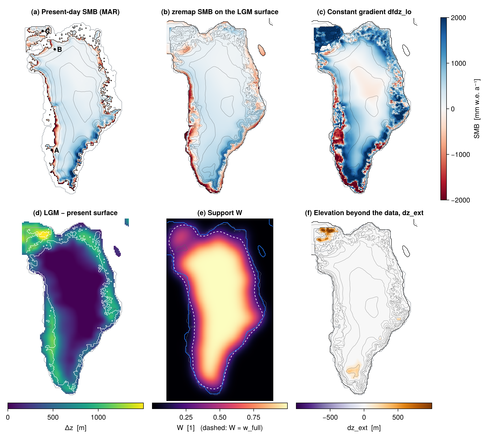
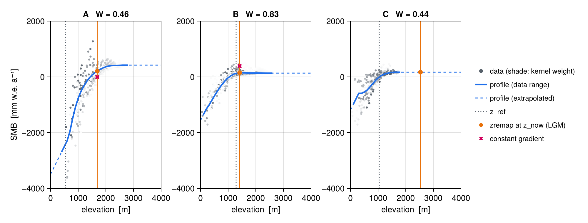
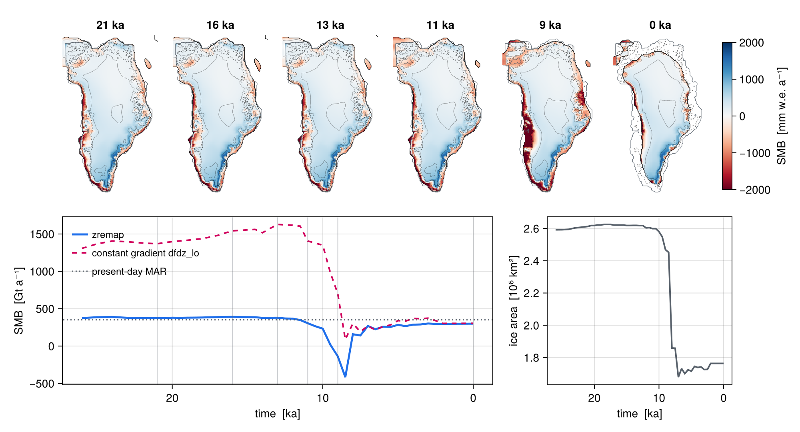

zremap
Remapping a surface field to a changing elevation
Overview
zremap adjusts a 2D surface field f (surface mass balance, surface temperature, …) to a changing ice-sheet surface. From one reference state, it builds local relationships f(z) between the field and elevation from the data points (e.g. the present-day ice). Each time step then evaluates them at the current elevation:
\[ f_\mathrm{now}(x,y) = f\big(x, y, z_\mathrm{now}(x,y)\big). \]
On the data points the profiles supply only the change with elevation, added to the reference field, so the reference is reproduced exactly on the reference surface:
\[ f_\mathrm{now}(x,y) = f_\mathrm{ref}(x,y) + f\big(x, y, z_\mathrm{now}(x,y)\big) - f\big(x, y, z_\mathrm{ref}(x,y)\big). \]
This is the lookup-table approach of Goelzer et al. (2020), but each point gets its own neighbourhood instead of a drainage basin. The neighbourhood is a Gaussian kernel of width sigma, in the spirit of the search radius of Helsen et al. (2012). No basins are needed, so the method works for any domain and for geometries very different from the reference, where basins are hard to define.
The module works on the input grid itself: a regular grid with spacing dx, with no grid object or remapping. One zremap_class object handles one field. Remapping SMB and surface temperature therefore takes two objects.
Method
Local profiles
zremap_update takes the reference field f_ref, the reference elevation z_ref and a mask of the points to use as data (mask_ref, e.g. the present-day ice). It builds a profile at every table point (every stride grid points):
- Binning. Each data point contributes to the two elevation bins around its
z_ref(binszbfromz_mintoz_max, spacingdz), with linear (hat) weights. Its horizontal weight is the Gaussian kernel at its distance from the table point, cut at 3sigmaand normalised to 1 over the full kernel. - Smoothing in z. The bin sums (of the weights, weight·f and weight·z) are smoothed along z with a Gaussian of width
sigma_z. The sums are smoothed, not the bin means, so a sparse bin of a few outlying points borrows from its well-populated neighbours instead of putting a kink in the profile.sigma_zsets the smoothness of the profiles independently of the table resolutiondz;sigma_z = 0turns it off. - Nodes. Each bin with data gives a node
(z̄, f̄): the mean elevation and mean value of the smoothed sums. Using the mean elevation rather than the bin centre makes the profile exact for a field that is linear in z, with or without smoothing. Without it, the error near the ends of the data range is up todz/2times the gradient. - Profile. The profile interpolates linearly between the nodes. Beyond them it continues with the gradient
dfdz_lobelow the lowest node anddfdz_hiabove the highest one. It is stored on the binszb.
The kernel is separable, so the sums take one pass along x and one along y. Each data point touches only two bins. Building the tables for a 16 km Greenland grid takes a fraction of a second.
Support, anomaly and blending to the fallback
The support W of a table point is the kernel weight of all its data, between 0 and 1. It is about 1 inside the data region and about 0.5 at its edge, and it decays over about sigma beyond the edge. W measures how much data the profile at a point rests on, so it is the confidence in the profile.
A grid point interpolates bilinearly between the profiles of the four table points around it, each weighted with its W, giving P(z). It blends P with a fallback built from its own reference value and the end gradients, f_ref + dfdz (z_now - z_ref), where dfdz = dfdz_lo below z_ref and dfdz_hi above it, as for a profile with a single node at (z_ref, f_ref). The blending weight is \(\alpha = \min(1, W/\texttt{w\_full})\), with W the bilinear support at the grid point.
On the data points (mask_ref with valid f_ref, z_ref), the profiles enter as an anomaly:
\[ f = f_\mathrm{ref} + \alpha\,\big[P(z_\mathrm{now}) - P(z_\mathrm{ref})\big] + (1-\alpha)\,\texttt{dfdz}\,(z_\mathrm{now}-z_\mathrm{ref}). \]
On the reference surface (z_now = z_ref) this is f_ref exactly, whatever the smoothing of the profiles. With P(z_now) alone, the kernel mean would replace the local reference value (about 8 % less integrated SMB over the Greenland ice at 16 km).
Elsewhere, f_ref is not data (it may be a gap-filled field), so the profiles enter as they are:
\[ f = \alpha\, P(z_\mathrm{now}) + (1-\alpha)\,\big[f_\mathrm{ref} + \texttt{dfdz}\,(z_\mathrm{now}-z_\mathrm{ref})\big]. \]
An anomaly there would carry the offset between f_ref and the profiles into the remapped field: ice spreading over low ice-free land would get the rise of the profile on top of the tundra value.
The field uses the profiles fully down to W = w_full, then fades to the fallback away from the data. With dfdz_hi = 0 for SMB, ice that thickens away from the data keeps its reference SMB instead of gaining SMB with height (which would feed back on the growth).
- Where there is no data at all (
W = 0), the fallback alone is used. - Where
f_reforz_refis missing (e.g. ocean), the profiles alone are used:f = P(z_now). - Where both are unavailable, the result is the missing value
mv.
The fallback uses f_ref outside mask_ref too. On ice-free land far from the data it should therefore hold a meaningful value.
Extrapolation in elevation
Horizontal support is not the only source of uncertainty. A point can be well supported and still lie above or below the elevation range of its data, e.g. when the ice thickens beyond anything in the reference. zremap_map can optionally return dz_ext, the elevation distance beyond the data range:
dz_ext |
Meaning |
|---|---|
> 0 |
z_now above the highest node (extrapolated with dfdz_hi) |
< 0 |
z_now below the lowest node (extrapolated with dfdz_lo) |
0 |
Within the data range |
mv |
No data |
Together, W and dz_ext describe how far a remapped value relies on extrapolation: horizontally and vertically.
Updating the reference
zremap_update can be called again at any time, e.g. when a new reference climate arrives in a transient forcing. It can also take an updated reference geometry, as the ice sheet evolves (cf. Helsen et al., 2012).
Derived types
zremap_par_class
| Component | Type | Meaning |
|---|---|---|
sigma |
real(wp) |
[m] width of the Gaussian kernel |
z_min, z_max, dz |
real(wp) |
[m] elevation bins |
sigma_z |
real(wp) |
[m] width of the smoothing along z |
w_full |
real(wp) |
[1] support from which the profiles are fully used |
stride |
integer |
Table spacing in grid points |
dfdz_lo, dfdz_hi |
real(wp) |
[f m⁻¹] gradients below and above the data |
zremap_class
| Component | Type | Meaning |
|---|---|---|
par |
zremap_par_class |
Parameters (above) |
nx, ny, dx |
Grid size and spacing [m] | |
nxo, nyo, nb |
integer |
Number of table points and bins |
zb(nb) |
real(wp) |
[m] bin elevations |
tab(nb,nxo,nyo) |
real(wp) |
Profiles f(zb) at the table points |
wt(nb,nxo,nyo) |
real(wp) |
Kernel weight of the data in each bin |
wsup(nxo,nyo) |
real(wp) |
Support W at the table points |
z_lo, z_hi (nxo,nyo) |
real(wp) |
[m] elevation range of the data (mean elevation of the lowest/highest bin, before smoothing) |
f_ref, z_ref (nx,ny) |
real(wp) |
Reference field and elevation |
w(nx,ny) |
real(wp) |
Support W at the grid points |
dfdz(nx,ny) |
real(wp) |
Gradient of the remapped field at z_ref |
Table points are placed every stride grid points, plus the last row and column, so the whole grid is covered.
Public API
| Procedure | Description |
|---|---|
zremap_init |
Load the parameters, set up the kernel, table points and bins |
zremap_update |
Build the profiles from a reference state |
zremap_map |
Remap the field to the current elevation (optionally dz_ext) |
zremap_write |
Write the tables, the support and dfdz to a netCDF file |
zremap_end |
Deallocate |
Signatures
call zremap_init(zr, filename, group, nx, ny, dx)
call zremap_update(zr, f_ref, z_ref, mask_ref)
call zremap_map(zr, f_now, z_now [, dz_ext])
call zremap_write(zr, filename)
call zremap_end(zr)| Argument | Type | Meaning |
|---|---|---|
zr |
type(zremap_class) |
The remapping object |
filename, group |
character(len=*) |
Parameter file and namelist group |
nx, ny |
integer |
Grid size |
dx |
real(wp) |
[m] grid spacing |
f_ref, z_ref |
real(wp)(nx,ny) |
Reference field and elevation [m]; mv = missing |
mask_ref |
logical(nx,ny) |
Points used as data |
f_now |
real(wp)(nx,ny), out |
Remapped field |
z_now |
real(wp)(nx,ny) |
[m] current elevation |
dz_ext |
real(wp)(nx,ny), out, optional |
[m] elevation distance beyond the data range |
zremap_write writes the 2D fields f_ref, z_ref, w and dfdz on the grid (xc, yc). On the table points (xo, yo) it writes w_sup, z_lo and z_hi, plus the tables f_tab and w_tab (xo, yo, zb). Without a grid object, x and y are given in km from the first grid point.
Namelist configuration
All parameters are required.
&zremap
sigma = 100e3 ! [m] width of the horizontal Gaussian kernel (cut at 3 sigma)
z_min = 0.0 ! [m] lowest elevation bin
z_max = 4000.0 ! [m] highest elevation bin
dz = 100.0 ! [m] bin spacing
sigma_z = 200.0 ! [m] width of the Gaussian smoothing along z (0 = none)
w_full = 0.25 ! [1] support from which the profiles are fully used
stride = 1 ! [-] table spacing in grid points
dfdz_lo = 2.0 ! [f m-1] gradient below the data (and below z_ref in the fallback)
dfdz_hi = 0.0 ! [f m-1] gradient above the data
/Choosing the parameters:
sigmasets how regional the profiles are. It should hold enough of an elevation range in the kernel to define a profile: around 50–150 km for Greenland.w_full: at a straight data edgeW ≈ 0.5. Withw_full = 0.25, the profiles are used fully up to about 0.7sigmabeyond the edge. The weight is α ≈ 0.6 at 1sigmaand α ≈ 0.1 at 2sigma.sigma_zsets how smooth the profiles are. Around 150–250 m removes the noise of sparse bins while keeping the curvature around the equilibrium line.dzis then only the table resolution and can stay at 50–100 m.z_min,z_maxshould cover the data. Data outside the range fall into the end bins. Elevations outside the range are extrapolated with the end gradients.stride: the tables takenb·nxo·nyovalues (×2 withwt).stride = 1is fine at 16 km. At 2 km a stride of a few points keeps the tables small, and the profiles hardly change over that distance.dfdz_lo,dfdz_hihave the units offper metre. For SMB, a typical choice is an ablation-zone gradient below the data and 0 above it. For temperature, both are a lapse rate.
Usage example
use zremap
type(zremap_class) :: zr_smb, zr_tsrf
real(wp) :: smb_ref(nx,ny), tsrf_ref(nx,ny), z_ref(nx,ny), z_srf(nx,ny)
real(wp) :: smb(nx,ny), tsrf(nx,ny), dz_ext(nx,ny)
logical :: mask_ice(nx,ny)
! One object per field, each with its own parameters
call zremap_init(zr_smb, "par.nml", "zremap_smb", nx, ny, dx)
call zremap_init(zr_tsrf, "par.nml", "zremap_tsrf", nx, ny, dx)
! Profiles from the reference state (again whenever the reference changes)
call zremap_update(zr_smb, smb_ref, z_ref, mask_ice)
call zremap_update(zr_tsrf, tsrf_ref, z_ref, mask_ice)
! Every coupling step: remap to the current surface
call zremap_map(zr_smb, smb, z_srf, dz_ext)
call zremap_map(zr_tsrf, tsrf, z_srf)
call zremap_write(zr_smb, "zremap_smb.nc")Example: Greenland SMB over the deglaciation
The demo program test/zremap/demo_zremap_grl.f90 (make demo-zremap) does the following:
- It takes the present-day Greenland SMB of MAR v3.11 (ERA-forced, 1961–1990 mean) on a 16 km grid.
- It remaps that SMB to the surfaces of the ICE-6G_C deglaciation (Peltier et al., 2015), from 26 ka to the present. Each surface is the MAR reference surface plus the ICE-6G_C surface anomaly of the time slice.
- The profiles come from the present-day ice points only.
f_refis the MAR SMB on all land, so the fallback is defined on ice-free land. - Parameters are those of the namelist above, with SMB in mm w.e. a⁻¹. The climate is held at the present day, so the example shows the effect of geometry alone.

zremap on the LGM ice. (c) SMB from a constant gradient dfdz_lo applied to the reference. (d) LGM minus present-day surface elevation. (e) Support W, with the LGM ice margin (blue) and W = w_full (dashed). (f) Elevation beyond the data range, dz_ext. Solid black: ice margin (present day in a, LGM in b, c, f); dashed: present-day margin; thin contours: surface elevation every 500 m; grey: coastline.
Figure 1 shows the remapping to the LGM surface:
- Thickening interior. Where the interior thickens by a few hundred metres, the profiles of the interior are nearly flat, so the SMB hardly changes.
- Low-lying margins. Where the LGM ice extends over today’s tundra and shelf at low elevation, the profiles give strong ablation, as at the present-day margin.
- Constant gradient (c). It applies the ablation-zone gradient everywhere. It raises the SMB by over 3 m w.e. a⁻¹ where the ice thickens, and it starts from the near-zero SMB of the tundra rather than from that of the ice.
- Support (e). The support marks where the result is backed by data. It is above
w_fullover almost all of the LGM ice and falls off only on the outer shelf and in the far north-west. The median over the LGM ice is 0.75. - Extrapolation (f).
dz_extshows where the LGM surface lies above all data of its neighbourhood: up to 1.3 km in the north-west, where the profile continues withdfdz_hi. - No value. 28 LGM ice points on today’s ocean, far from any data, have neither support nor a reference value, and stay missing.

sigma_z = 200 m. Grey: data within 3 sigma, shaded by kernel weight; blue: profile (dashed where extrapolated); dotted: reference elevation; orange: LGM elevation and remapped SMB; red cross: constant gradient (off scale at C).
Figure 2 shows profiles at three points:
- A, in the south-west ablation zone: a profile that steepens towards the low-lying margin and is flat above the equilibrium line. The data are scattered there, and the smoothing along z keeps the profile from following the few points of each low bin.
- B, at the north-west margin: a smooth profile.
- C, on the ice-free land beyond the present margin: its surface rises by 1.5 km at the LGM. It is still supported (
W = 0.44), but the LGM surface lies above all its data, so the value comes from the flat extrapolation.

zremap and from a constant gradient, with the ice area (bottom right). Solid black: ice margin of the slice; dashed: present-day margin; thin contours: surface elevation every 1000 m.
Figure 3 follows the remapped SMB through the deglaciation. On this grid the ICE-6G_C ice extent hardly changes until about 10 ka (bottom right); the thinning shows in the elevation contours, and the retreat after 10 ka in the margins:
- Glacial slices. The integrated SMB from
zremapstays close to the present-day value (about 320 Gt a⁻¹ against 350 Gt a⁻¹). The constant gradient gives about 1400 Gt a⁻¹, mostly from the thickened ice. - Around 9 ka. The ICE-6G_C ice still extends at low elevation beyond the present south-west margin. The profiles give strong ablation there, and the integrated SMB turns negative.
- Present day. At 0 ka,
zremapreproduces the present-day field on the MAR ice where the ICE-6G_C surface matches the MAR one; the integrated value differs through the ICE-6G_C ice mask and surface.
To regenerate the figures (ice_data next to fesm-utils):
make demo-zremap
./bin/demo_zremap_grl.x docs/figures/zremap/zremap_grl.nml
cd docs/figures && julia --project=. zremap_figures.jlTests
make test-zremap builds bin/test_zremap.x. It uses a synthetic ice dome with a field linear in elevation and checks the following, with stride 1 and stride 3:
- exact reproduction of
f_refatz_refon the data, the profiles off the data, and remapping after the surface is lowered; - extrapolation above the summit and below the margin;
- the fallback, with
dfdz_hiabovez_refanddfdz_lobelow it, the supportWanddz_ext; - continuity from the dome to the fallback.
References
- Goelzer, H., et al. (2020). The future sea-level contribution of the Greenland ice sheet: a multi-model ensemble study of ISMIP6. The Cryosphere, 14, 3071–3096.
- Helsen, M. M., et al. (2012). Coupling of climate models and ice sheet models by surface mass balance gradients: application to the Greenland Ice Sheet. The Cryosphere, 6, 255–272.
- Peltier, W. R., Argus, D. F., & Drummond, R. (2015). Space geodesy constrains ice age terminal deglaciation: The global ICE-6G_C (VM5a) model. Journal of Geophysical Research: Solid Earth, 120, 450–487.